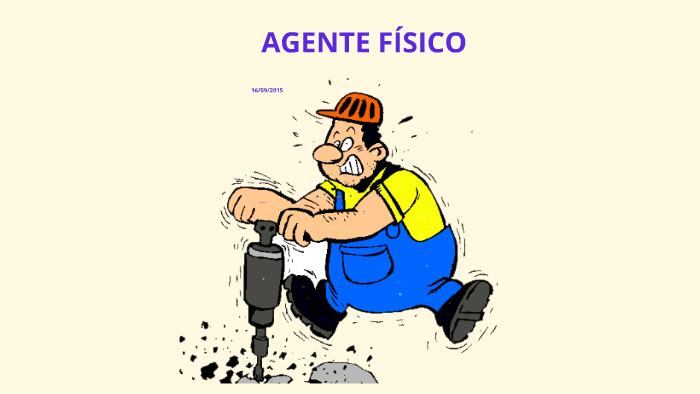
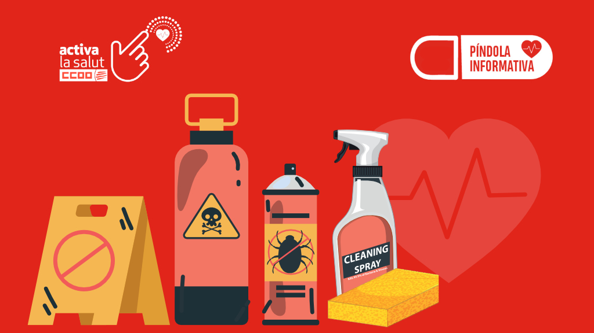

1.1. Riesgos de Seguridad
|
1.2. Factores de Riesgo (Carga)Carga Física: Posturas, fatiga visual. Carga Mental: Estrés, presión, ritmo alto. |
|

Físicos
Ruido, Vibraciones, Temperatura e Iluminación. |
Biológicos
Virus y Bacterias. |

Químicos
Agentes y sustancias. |